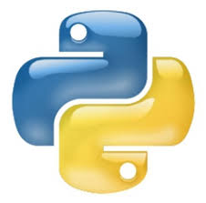
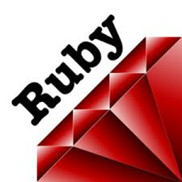

理解Node.js
唐新发
2013-07-04
理解Node.js
1 Javascript简介
web浏览器上的唯一语言
批着c外衣的lisp
被误解最多的语言
<button onClick='alert("Hello Javascript");'>Click Me</button>
2 Javascript诞生
1995年，Netscape（网景）打算在浏览器（Netscape Navigator 2.0）中嵌入Scheme，招募来Brendan Eich（布兰登·艾奇），事情很快变成在浏览器中嵌入一种像Java的脚本语言，Brendan Eich在10天的时间里写出了JavaScript的雏形Mocha（摩卡），Mocha也被用于嵌入Netscape的服务器产品LiveWire，为了便于市场营销Mocha改名为LiveScript，1995年底Netscape和Sun商谈后终将LiveScript更名为JavaScript。
3 Javascript扩张
JavaScript 1.0随Netscape Navigator 2.0发行并取得了成功，随后Netscape在Netscape Navigator 3.0中发布了JavaScript 1.1版，这个时候微软决定进军浏览器，发布了IE 3.0并搭载了一个JavaScript的克隆版，叫做JScript。
1997年，JavaScript 1.1作为一个草案提交给欧洲计算机制造商协会（ECMA），完成了标准化（ECMA-262标准，ECMAScript脚本语言）。
后来Netscape在浏览器大战中不敌微软，LiveWire服务器产品也跟着失败了，服务器端JavaScript消失了。
4 Javascript统治
Javascript驱动Web
5 ECMAScript
ECMAScript 描述了以下内容：
- 语法
- 类型
- 语句
- 关键字
- 保留字
- 运算符
- 对象
6 Javascript的组成
一个完整的 JavaScript 实现是由以下 3 个不同部分组成的：
- 核心（ECMAScript）
- 文档对象模型（DOM）
- 浏览器对象模型（BOM）
7 Javascript特点
函数式
原型继承
弱类型
词法作用域
8 Javascript特性：“类”
Javascript是
基于原型
面向对象语言
没有“类”概念
原型＋构造函数＋new关键字＝类
9 Javascript特性：“类”（示例）
function Man(name, age) { this.name = name; this.age = age; } Man.prototype.introduce = function(){ return "My name is " + this.name + ", I'am " + this.age; }; var man1 = new Man("jack", 24); var man2 = new Man("tom", 25); console.log(man1.introduce()); console.log(man2.introduce());
My name is jack, I'am 24 My name is tom, I'am 25
10 Javascript特性：闭包
闭包是
代码块（通常是函数）
和
创建该代码块的上下文中数据
的结合。
表现为
函数可以访问外部作用域定义的变量
即使外部作用域已经退出
11 Javascript特性：闭包（示例）
function Woman(name, age) { this.name = name; this.introduce = function(){ return "My name is " + this.name + ", I'am " + (age - 10); }; } var woman1 = new Woman("mary", 34); var woman2 = new Woman("rose", 45); console.log(woman1.introduce()); console.log(woman2.introduce());
My name is mary, I'am 24 My name is rose, I'am 35
12 常见的Web后端开发技术
Perl
Php

Python

Ruby


13 今天要介绍的Web后端开发技术
14 Node.js简介
Node.js不是
像php、python、perl、ruby这样的语言
像CakePHP、Django、Rails这样的服务器端框架
像JQuery、ExtJS、Backbone.js这样的浏览器端库
15 Node.js简介
Node.js是
一个后端的Javascript运行环境
采用Google Chrome浏览器的JavaScript引擎：V8